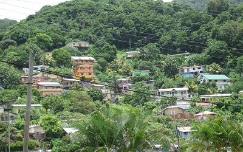
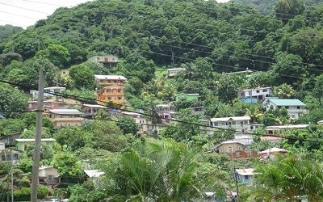

LIFE & INSPIRATION
 

I just want to see where this text is going to go and then I can fill it in at another time. I just want to see where this text is going to go and then I can fill it in at another time. I just want to see where this text is going to go and then I can fill it in at another time. I just want to see where this text is going to go and then I can fill it in at another time. I just want to see where this text is going to go and then I can fill it in at another time. I just want to see where this text is going to go and then I can fill it in at another time. I just want to see where this text is going to go and then I can fill it in at another time.
CURRENTLY
I am curentlly at blah blah blah blah blah I just want to see where this text is going to go and then I can fill it in at another time. I just want to see where this text is going to go and then I can fill it in at another time. I just want to see where this text is going to go and then I can fill it in at another time. I just want to see where this text is going to go and then I can fill it in at another time. I just want to see where this text is going to go and then I can fill it in at another time. I just want to see where this text is going to go and then I can fill it in at another time. I just want to see where this text is going to go and then I can fill it in at another time